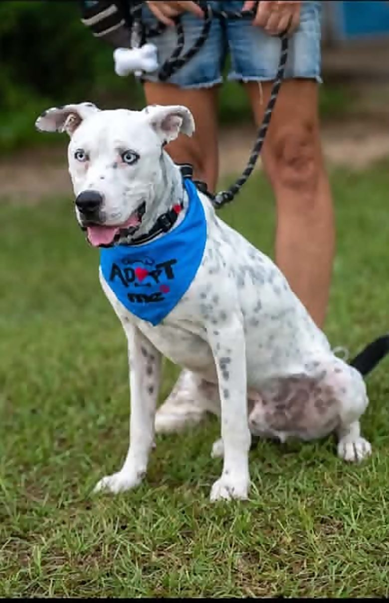
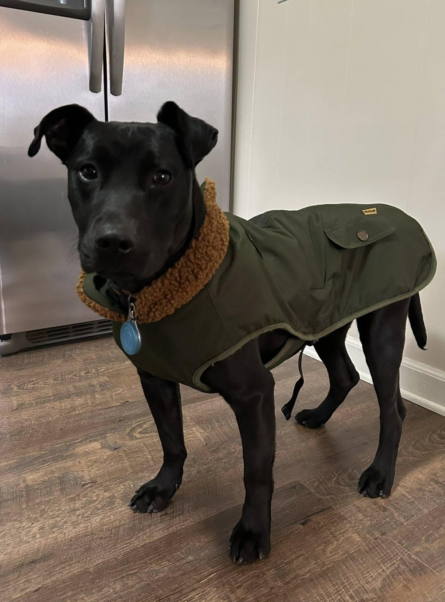

Last Chance Ranch · Department of Pawctions
Every dog deserves
a last chance.
We're a small, no-kill dog & cat sanctuary in Aiken, South Carolina. Our inmates are doing time for circumstances beyond their control — abandoned, neglected, or simply out of options — and every one of them is eligible for parole into a loving home.

Wantedfor a better life Inmate #34Blue
Four ways to help
Join the Maximum Security Snuggles Unit
Apply for Parole
Every dog here has already been through the hard part. Browse the inmates, read their files, and apply. We match carefully so it sticks — for good.
Find a dogRun a Half Way House
Fostering saves lives twice: the dog on your couch, and the one who takes their kennel. Short-term, long-term, or foster-to-adopt — we cover food and vet care.
Foster a dogJoin the Yard Crew
Walking, bathing, transport, photos, events, social media — we're volunteer-run, and there's a job for every skill set (and every schedule).
VolunteerPost Bail
Vet bills, food, and fence repairs don't pay themselves. Every dollar goes straight to the animals — no salaries, no overhead, no fancy office.
Donate now
Our mission
Rescue. Rehabilitate. Rehome — or keep for life.
Last Chance Ranch rescues and rehabilitates abused, neglected, and unwanted dogs and cats, providing adoption when possible and lifelong sanctuary care when needed, while promoting humane treatment and responsible pet ownership.
We're no-kill, which means the dogs nobody else would take — the seniors, the shy ones, the ones with a rap sheet — get a home with us for as long as it takes. Some find families. Some stay forever. All of them are safe.
About the RanchNow booking
Inmates awaiting parole
From the visiting room
What our neighbors say
Just visited this rescue and got a tour. It's a beautiful property on 4 acres and the ladies running it have huge heart. They literally take dogs into their homes and give them the care they need.
Tyler G.
Went over today to see about volunteering and the place is amazing. The dogs and cats are so happy there just waiting for their furever homes. Please consider coming to donate some time or supplies!
Amy B.
Last Chance provides a valuable resource for dogs who need a safe environment to flourish and trust humans again. Thank you for accepting gentle Gentry!
Kim G.
You cannot find more compassionate and caring people who truly put their hearts and souls into providing this opportunity to animals in need of assistance and rehabilitation.
Jessica G.
Fabulous people with endless love for animals.
John M.
Fabulous rescue!! Would recommend!!
Tami S.
Very awesome, always knew you would save the animals.
Pat S.
Not sure who's your type?
Who's your pawtner in crime?
Bonnie had Clyde. Thelma had Louise. Butch had Sundance. Take our one-minute booking quiz, find out what you're in for, and meet the inmate who'd take the fall for you.
Get booked 🚨